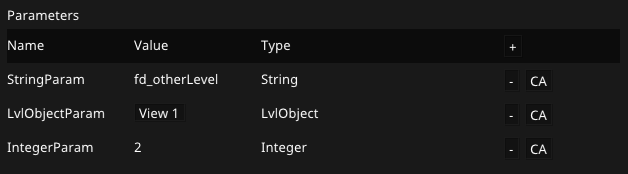
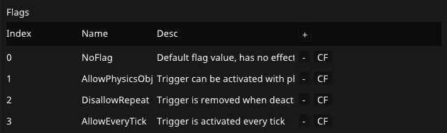
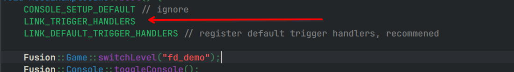
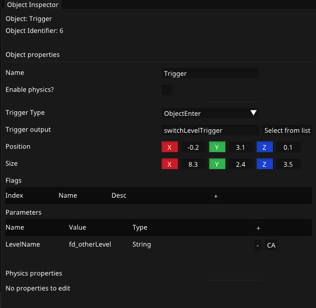

Client API Triggers
Triggers are fundemental concept in Fusion, they allow for the level to perform code actions when events occur.
Trigger types
The two trigger types are:
- ObjectEnter: Fire the trigger when an object(even the player) enters it
- PlayerJump: Fire the trigger when the player is in contact with the trigger, and jumps
Trigger output
The trigger output is the name you use when LINK_TRIGGER_HANDLER, its the name of the trigger to dispatch
Trigger parameters
Trigger parameters allow a trigger level object to pass variables data to the client on trigger activate/deactivate. There are three types of parameters:
- LvlObject: Pass a level object by ID to the trigger
- Integer: Pass a static number to the trigger
- String: Pass a static string to the trigger
Trigger parameters are stored as a key/value pair, and the client can get the values by using the parameters objects multiple get methods, by passing in the parameter name(aka key), and getting the parameter value.

Trigger flags
Trigger flags are flags on how the trigger should work in the level, they can be added in Fission's trigger flags editor.
Detailed descriptions of the trigger flags are below:
- NoFlag: Nothing
- AllowPhysicsObjects: Only works with
ObjectEnter, trigger will also fire when a physics object interacts with it - DisallowRepeat: Trigger is removed once it is deactivated
- AllowEveryTick: Trigger is fired every tick while it is activated

API Reference
Below is the complete API reference for Fusion client triggers
Best practice! Use a triggers.hpp header file
Have a header file, usually named triggers.hpp which imports all triggers, and registeres them.
#pragma once
#include "Fusion/etc/trigger.hpp"
#include "helloWorldTrigger.hpp"
#include "Fusion/game/game.hpp"
BEGIN_LINK_TRIGGER_HANDLERS
LINK_TRIGGER_HANDLER("helloWorld", HelloWorldTriggerHandler);
END_LINK_TRIGGER_HANDLERS
MACRO: BEGIN_LINK_TRIGGER_HANDLERS
Begins linking trigger handlers, anything between this call and END_LINK_TRIGGER_HANDLERS is called on LINK_TRIGGER_HANDLERS.
Developer note:
This macro creates the function cInitTriggerHandlers, and END_LINK_TRIGGER_HANDLERS simply closes it
MACRO: END_LINK_TRIGGER_HANDLERS
Ends linking trigger handlers, now to batch link all triggers handlers use LINK_TRIGGER_HANDLERS on game startup
MACRO: LINK_TRIGGER_HANDLER(STRING NAME, CLASS HANDLER)
Links the trigger name to the trigger handler class
MACRO: LINK_TRIGGER_HANDLERS
Batch links all trigger handlers, this should be called once on game boot 
CLASS: TriggerHandler
Base class for all trigger handlers, child classes should override onActivate(...), and onDeactivate(...)
FUNCTION: TriggerHandler::onActivate(Parameters params)
Called whenever the trigger is activated, the parameters are used to pass parameters from the level to the client
FUNCTION: TriggerHandler:onDeactivate(Parameters params)
Called whenever the trigger is deactivated, parameters are used the same way as onActivate uses them.
EXAMPLES
SWITCH LEVEL TRIGGER HANDLER
Header:
/**
* Default trigger handler, switches the game level to ```LevelName```
*/
class SwitchLevelTriggerHandler : public TriggerHandler {
public:
SwitchLevelTriggerHandler();
void onActivate(Parameters params) override;
void onDeactivate(Parameters params) override;
};
Implementation:
SwitchLevelTriggerHandler::SwitchLevelTriggerHandler() = default;
void SwitchLevelTriggerHandler::onActivate(Fusion::Parameters params) {
Fusion::Game::switchLevel(params.getStringValue("LevelName"));
}
void SwitchLevelTriggerHandler::onDeactivate(Fusion::Parameters params) {
}
Best practice, triggers.hpp:
#include <Fusion/etc/trigger.hpp>
#include <Fusion/game/game.hpp>
#include <MyGame/triggers/switchLevelTrigger.hpp>
BEGIN_LINK_TRIGGER_HANDLERS
LINK_TRIGGER_HANDLER("switchLevelTrigger", SwitchLevelTriggerHandler)
END_LINK_TRIGGER_HANDLERS
Editor:
